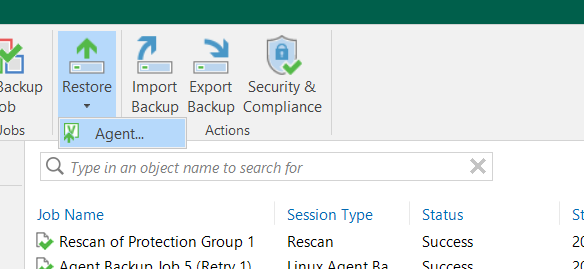
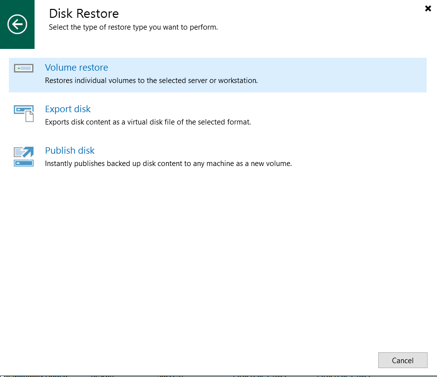
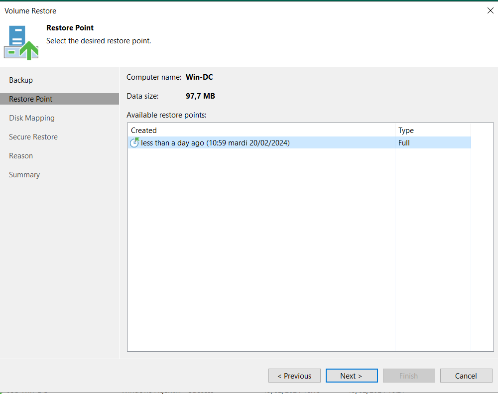
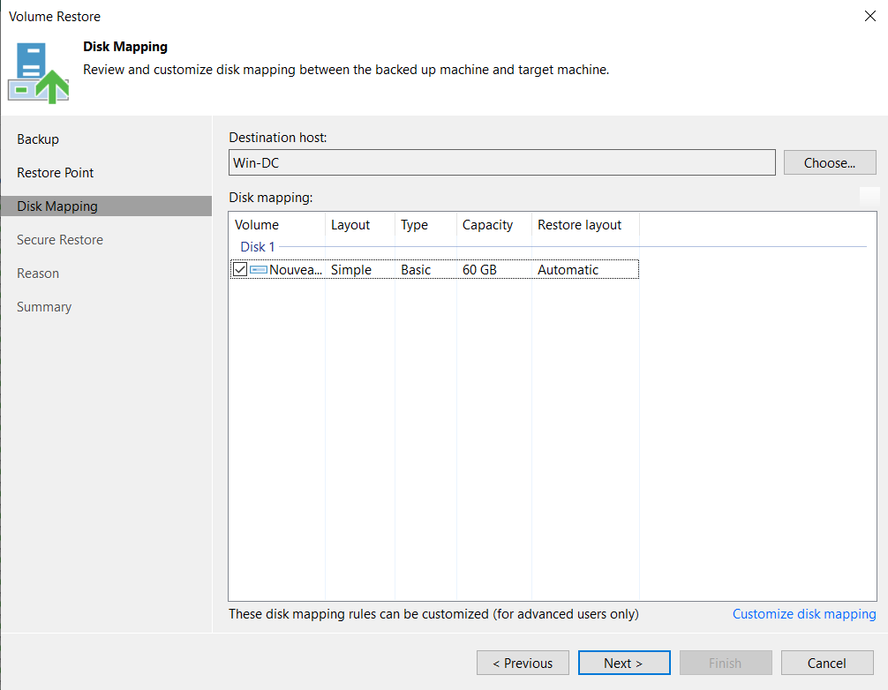
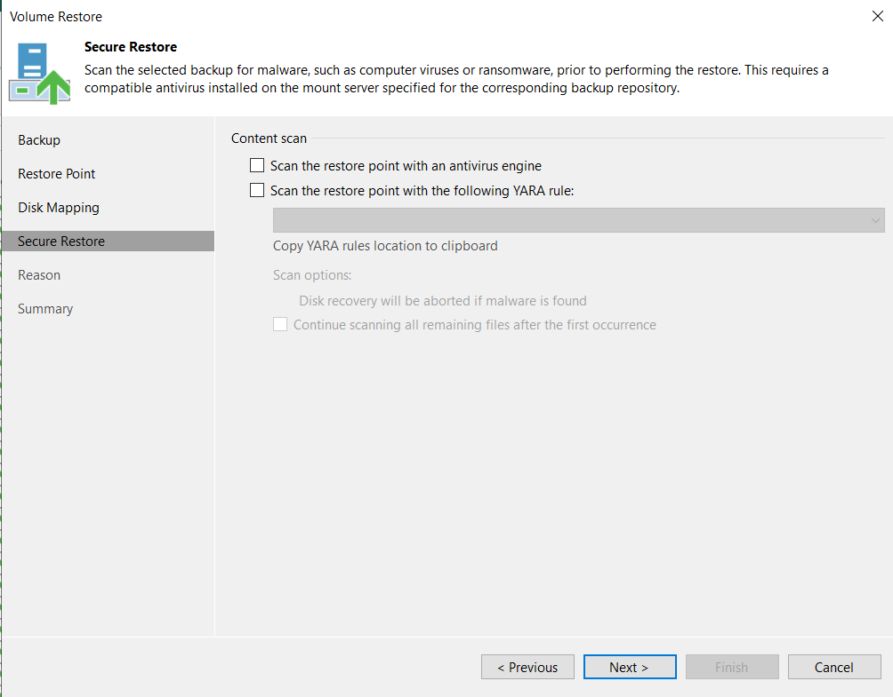

Windows
On sélectionne Restore puis Agent..

On sélectionne Disk restore

On choisit Volume restore

On choisit la sauvegarde que l'on souhaite restaurer

On choisit le point de restauration

On choisit le disque sur lequel on restaure les données

On laisse les deux cases décochées

On donne la raison pour laquelle on fait une restauration

On vérifier les infos et on clique sur Finish